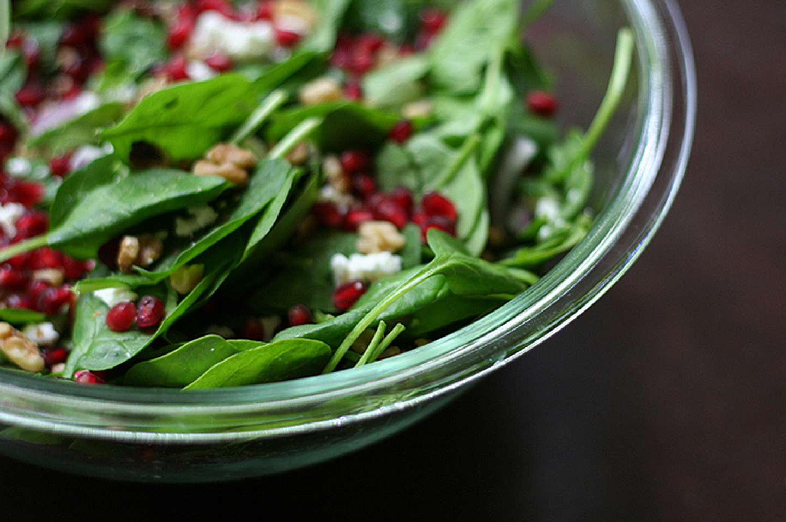

Spinach Pomegranate Salad

Description
A very quick and nutritious salad made with
pomegranate seeds and feta cheese.
Ingredients
- 1 (10 ounce) bag baby spinach leaves, rinsed and drained
- ¼ red onion, sliced very thin
- ½ cup walnut pieces
- ½ cup crumbled feta
- ¼ cup alfalfa sprouts (Optional)
- 1 pomegranate, peeled and seeds separated
- 4 tablespoons balsamic vinaigrette
Directions
- Place spinach in a salad bowl. Top with red onion, walnuts, feta, and sprouts. Sprinkle pomegranate seeds over the top, and drizzle with vinaigrette.